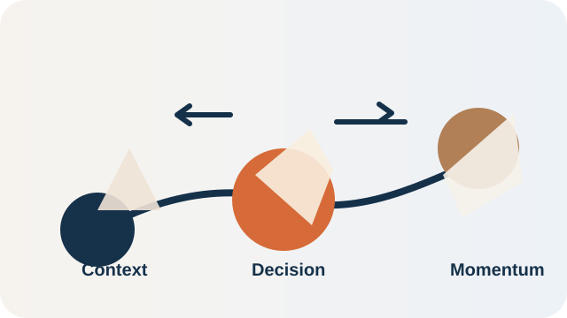
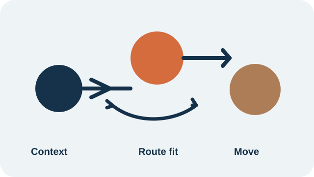
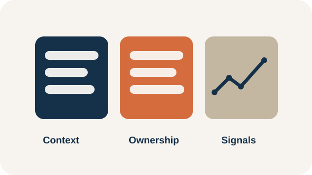

Leadership
Direction
Asset library
KOV visual system concepts
This private staging library showcases reusable visual directions for leadership, mobility, and career transitions while the final design references are still being applied.
Leadership
Journey

Mobility
Routes

Decision
Quality

Career
Transitions
Research
Signals
Artwork and page treatment remain provisional until approved design references are applied. This asset batch is kept in the noindex staging environment and is not part of the public production release.